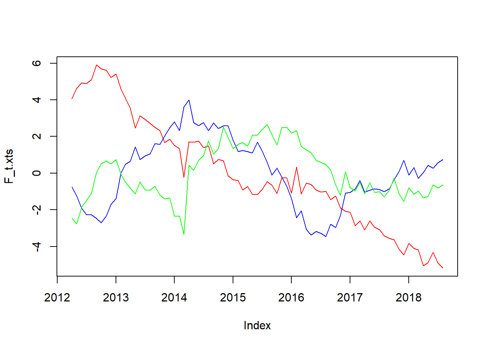
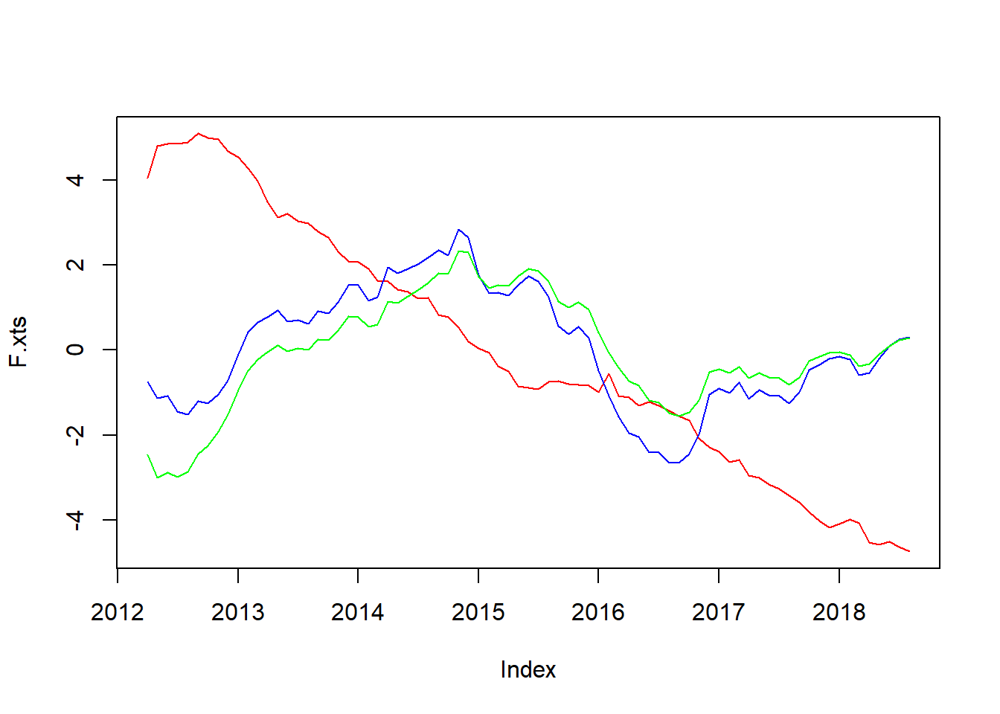
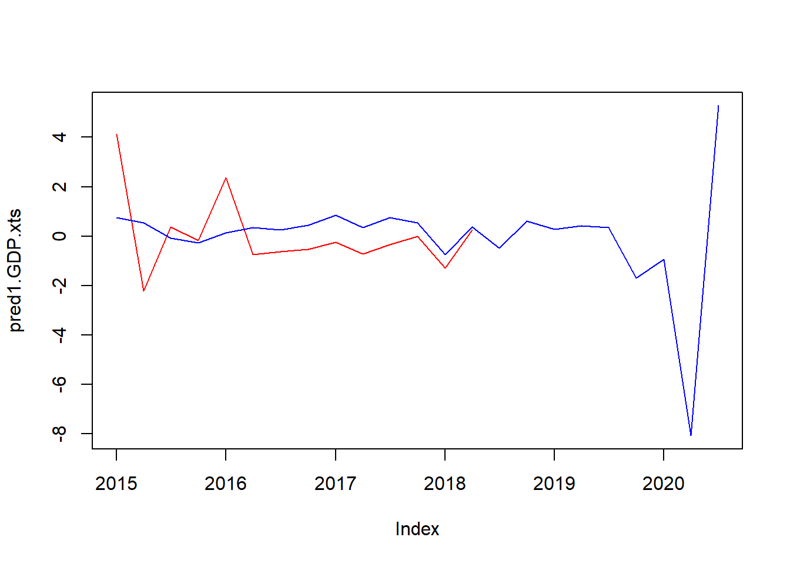

2. Rで実装する
では実装します。前回記事で得られたデータ（dataset）が読み込まれている状態からスタートします。まず、主成分分析でファクターを計算します。なお、前回の記事で3ファクターの累積寄与度が80%を超えたため、今回もファクター数は3にしています。
#------------------------
# Giannone et. al. 2008
#------------------------
library(xts)
library(MASS)
library(tidyverse)
# 主成分分析でファクターを計算
f <- 3 # ファクター数を定義
a <- which(dataset1$publication == "2012-04-01") # サンプル開始期間を2012年に設定。
dataset2 <- dataset1[a:nrow(dataset1),]
rownames(dataset2) <- dataset2$publication
dataset2 <- dataset2[,-2]
z <- scale(dataset2) # zは基準化されたサンプルデータ
for (i in 1:nrow(z)){
eval(parse(text = paste("S_i <- z[i,]%*%t(z[i,])",sep = "")))
if (i==1){
S <- S_i
}else{
S <- S + S_i
}
}
S <- (1/nrow(z))*S # 分散共分散行列を計算 (4)式
gamma <- eigen(S)
D <- diag(gamma$values[1:f])
V <- gamma$vectors[,1:f]
F_t <- matrix(0,nrow(z),f)
for (i in 1:nrow(z)){
eval(parse(text = paste("F_t[",i,",]<- z[",i,",]%*%V",sep = ""))) # (5)式を実行
}
F_t.xts <- xts(F_t,order.by = as.Date(row.names(z)))
plot.zoo(F_t.xts,col = c("red","blue","green","yellow","purple"),plot.type = "single") # 時系列プロット
lambda_hat <- V
psi <- diag(S-V%*%D%*%t(V)) # (7)式
R <- diag(diag(cov(z-z%*%V%*%t(V)))) 推計したファクター\(\tilde{F}\_t\)の時系列プロットは以下のようになり、前回princomp関数で計算したファクターと完全一致します（じゃあprincompでいいやんと思われるかもしれませんが実装しないと勉強になりませんので）。
次に、VAR(1)を推計し、パラメータを取り出します。
# VAR(1)モデルを推計
a <- matrix(0,f,f)
b <- matrix(0,f,f)
for(t in 2:nrow(z)){
a <- a + F_t[t,]%*%t(F_t[t-1,])
b <- b + F_t[t-1,]%*%t(F_t[t-1,])
}
b_inv <- solve(b)
A_hat <- a%*%b_inv # (9)式
e <- numeric(f)
for (t in 2:nrow(F_t)){
e <- e + F_t[t,]-F_t[t-1,]%*%A_hat
}
H <- t(e)%*%e
Q <- diag(1,f,f)
Q[1:f,1:f] <- HVAR(1)に関してもvar関数とパラメータの数値が一致することを確認済みです。いよいよカルマンフィルタを実行します。
# カルマンフィルタを実行
RR <- array(0,dim = c(ncol(z),ncol(z),nrow(z))) # RRは観測値の分散行列（相関はないと仮定）
for(i in 1:nrow(z)){
miss <- is.na(z[i,])
R_temp <- diag(R)
R_temp[miss] <- 1e+32 # 欠損値の分散は無限大にする
RR[,,i] <- diag(R_temp)
}
zz <- z; zz[is.na(z)] <- 0 # 欠損値（NA）に0を代入（計算結果にはほとんど影響しない）。
a_t <- matrix(0,nrow(zz),f) # a_tは状態変数の予測値
a_tt <- matrix(0,nrow(zz),f) # a_ttは状態変数の更新後の値
a_tt[1,] <- F_t[1,] # 状態変数の初期値には主成分分析で推計したファクターを使用
sigma_t <- array(0,dim = c(f,f,nrow(zz))) # sigma_tは状態変数の分散の予測値
sigma_tt <- array(0,dim = c(f,f,nrow(zz))) # sigma_tは状態変数の分散の更新値
p <- ginv(diag(nrow(kronecker(A_hat,A_hat)))-kronecker(A_hat,A_hat))
sigma_tt[,,1] <- matrix(p,3,3) # 状態変数の分散の初期値はVAR(1)の推計値から計算
y_t <- matrix(0,nrow(zz),ncol(zz)) # y_tは観測値の予測値
K_t <- array(0,dim = c(f,ncol(zz),nrow(zz))) # K_tはカルマンゲイン
data.m <- as.matrix(dataset2)
# カルマンフィルタを実行
for (t in 2:nrow(zz)){
a_t[t,] <- A_hat%*%a_tt[t-1,]
sigma_t[,,t] <- A_hat%*%sigma_tt[,,t-1]%*%t(A_hat) + Q
y_t[t,] <- as.vector(V%*%a_t[t,])
S_t <- V%*%sigma_tt[,,t-1]%*%t(V)+RR[,,t]
GG <- t(V)%*%diag(1/diag(RR[,,t]))%*%V
Sinv <- diag(1/diag(RR[,,t])) - diag(1/diag(RR[,,t]))%*%V%*%ginv(diag(nrow(A_hat))+sigma_t[,,t]%*%GG)%*%sigma_t[,,t]%*%t(V)%*%diag(1/diag(RR[,,t]))
K_t[,,t] <- sigma_t[,,t]%*%t(V)%*%Sinv
a_tt[t,] <- a_t[t,] + K_t[,,t]%*%(zz[t,]-y_t[t,])
sigma_tt[,,t] <- sigma_t[,,t] - K_t[,,t]%*%V%*%sigma_tt[,,t-1]%*%t(V)%*%t(K_t[,,t])
}
F.xts <- xts(a_tt,order.by = as.Date(rownames(data.m)))
plot.zoo(F.xts, col = c("red","blue","green","yellow","purple"),plot.type = "single") # 得られた推計値を時系列プロット
カルマンフィルタにより推計したファクターの時系列プロットが以下です。遷移方程式がAR(1)だったからかかなり平準化された値となっています。
では、この得られたファクターをOLSにかけます。
# 得られたファクターとGDPをOLSにかける
F_q <- as.data.frame(a_tt[seq(3,nrow(a_tt),3),]) # 四半期の終わり月の値だけを引っ張ってくる
colnames(F_q) <- c("factor1","factor2","factor3")
colnames(GDP) <- c("publication","GDP")
t <- which(GDP$publication=="2012-04-01")
t2 <- which(GDP$publication=="2015-01-01") # 2012-2q~2015-1qまでのデータが学習データ、それ以降がテストデータ
GDP_q <- GDP[t:nrow(GDP),]
dataset.q <- cbind(GDP_q[1:(t2-t),],F_q[1:(t2-t),])
test <- lm(GDP~factor1 + factor2 + factor3,data=dataset.q)
summary(test)##
## Call:
## lm(formula = GDP ~ factor1 + factor2 + factor3, data = dataset.q)
##
## Residuals:
## Min 1Q Median 3Q Max
## -1350.34 -361.67 -31.63 375.61 1105.07
##
## Coefficients:
## Estimate Std. Error t value Pr(>|t|)
## (Intercept) 125729.4 4134.2 30.412 1.07e-08 ***
## factor1 -199.0 1651.3 -0.121 0.907
## factor2 -1699.7 960.2 -1.770 0.120
## factor3 -2097.6 3882.5 -0.540 0.606
## ---
## Signif. codes: 0 '***' 0.001 '**' 0.01 '*' 0.05 '.' 0.1 ' ' 1
##
## Residual standard error: 897.5 on 7 degrees of freedom
## Multiple R-squared: 0.783, Adjusted R-squared: 0.69
## F-statistic: 8.419 on 3 and 7 DF, p-value: 0.0101out_of_sample <- cbind(GDP_q[(t2-t+1):nrow(GDP_q),],F_q[(t2-t+1):nrow(GDP_q),]) # out of sampleのデータセットを作成
test.pred <- predict(test, out_of_sample, interval="prediction")
pred.GDP.xts <- xts(cbind(test.pred[,1],out_of_sample$GDP),order.by = out_of_sample$publication)
plot.zoo(pred.GDP.xts,col = c("red","blue"),plot.type = "single") # 予測値と実績値を時系列プロット
OLSの推計結果はfactor1（赤）とfactor2（青）が有意との結果。前回の投稿でも言及したように、factor1（赤）はリスクセンチメントを表していそうなので、係数の符号が負であることは頷ける。ただし、factor2（青）も符号が負なのではなぜなのか…。このファクターは生産年齢人口など経済の潜在能力を表していると思っていたのに。かなり謎。まあとりあえず予測に移りましょう。このモデルを使用したGDPの予測値と実績値の推移はいかのようになりました。直近の精度は悪くない？
というか、これ完全に単位根の問題を無視してOLSしてしまっているな。ファクターもGDPも完全に単位根を持つけど念のため単位根検定をかけてみます。
library(tseries)
adf.test(F_q$factor1)##
## Augmented Dickey-Fuller Test
##
## data: F_q$factor1
## Dickey-Fuller = -2.8191, Lag order = 2, p-value = 0.2603
## alternative hypothesis: stationaryadf.test(F_q$factor2)##
## Augmented Dickey-Fuller Test
##
## data: F_q$factor2
## Dickey-Fuller = -2.6749, Lag order = 2, p-value = 0.3153
## alternative hypothesis: stationaryadf.test(F_q$factor3)##
## Augmented Dickey-Fuller Test
##
## data: F_q$factor3
## Dickey-Fuller = -2.8928, Lag order = 2, p-value = 0.2323
## alternative hypothesis: stationaryadf.test(GDP_q$GDP)##
## Augmented Dickey-Fuller Test
##
## data: GDP_q$GDP
## Dickey-Fuller = 1.5034, Lag order = 3, p-value = 0.99
## alternative hypothesis: stationaryはい。全部単位根もってました…。階差をとったのち、単位根検定を行います。
GDP_q <- GDP_q %>% mutate(growth.rate=(GDP/lag(GDP)-1)*100)
F_q <- F_q %>% mutate(f1.growth.rate=(factor1/lag(factor1)-1)*100,
f2.growth.rate=(factor2/lag(factor2)-1)*100,
f3.growth.rate=(factor3/lag(factor3)-1)*100)
adf.test(GDP_q$growth.rate[2:NROW(GDP_q$growth.rate)])##
## Augmented Dickey-Fuller Test
##
## data: GDP_q$growth.rate[2:NROW(GDP_q$growth.rate)]
## Dickey-Fuller = -0.31545, Lag order = 3, p-value = 0.9838
## alternative hypothesis: stationaryadf.test(F_q$f1.growth.rate[2:NROW(F_q$f1.growth.rate)])##
## Augmented Dickey-Fuller Test
##
## data: F_q$f1.growth.rate[2:NROW(F_q$f1.growth.rate)]
## Dickey-Fuller = -2.7762, Lag order = 2, p-value = 0.2767
## alternative hypothesis: stationaryadf.test(F_q$f2.growth.rate[2:NROW(F_q$f2.growth.rate)])##
## Augmented Dickey-Fuller Test
##
## data: F_q$f2.growth.rate[2:NROW(F_q$f2.growth.rate)]
## Dickey-Fuller = -2.6156, Lag order = 2, p-value = 0.3379
## alternative hypothesis: stationaryadf.test(F_q$f3.growth.rate[2:NROW(F_q$f3.growth.rate)])##
## Augmented Dickey-Fuller Test
##
## data: F_q$f3.growth.rate[2:NROW(F_q$f3.growth.rate)]
## Dickey-Fuller = -2.9893, Lag order = 2, p-value = 0.1955
## alternative hypothesis: stationaryfactor1だけは5%有意水準で帰無仮説を棄却できない…。困りました。有意水準を10%ということにして、とりあえず階差でOLSしてみます。
dataset.q <- cbind(GDP_q[1:(t2-t),],F_q[1:(t2-t),])
colnames(dataset.q) <- c("publication","GDP","growth.rate","factor1","factor2","factor3","f1.growth.rate","f2.growth.rate","f3.growth.rate")
test1 <- lm(growth.rate~f1.growth.rate + f2.growth.rate + f3.growth.rate,data=dataset.q)
summary(test1)##
## Call:
## lm(formula = growth.rate ~ f1.growth.rate + f2.growth.rate +
## f3.growth.rate, data = dataset.q)
##
## Residuals:
## Min 1Q Median 3Q Max
## -1.6940 -0.2411 0.2041 0.4274 1.0904
##
## Coefficients:
## Estimate Std. Error t value Pr(>|t|)
## (Intercept) 8.978e-02 4.588e-01 0.196 0.851
## f1.growth.rate -6.353e-03 1.375e-02 -0.462 0.660
## f2.growth.rate 6.155e-04 6.026e-03 0.102 0.922
## f3.growth.rate -9.249e-05 5.152e-04 -0.180 0.863
##
## Residual standard error: 0.956 on 6 degrees of freedom
## (1 observation deleted due to missingness)
## Multiple R-squared: 0.04055, Adjusted R-squared: -0.4392
## F-statistic: 0.08452 on 3 and 6 DF, p-value: 0.966推計結果がわるくなりました…。予測値を計算し、実績値とプロットしてみます。
out_of_sample1 <- cbind(GDP_q[(t2-t+1):nrow(GDP_q),],F_q[(t2-t+1):nrow(GDP_q),]) # out of sampleのデータセットを作成
test1.pred <- predict(test1, out_of_sample1, interval="prediction")
pred1.GDP.xts <- xts(cbind(test1.pred[,1],out_of_sample1$growth.rate),order.by = out_of_sample1$publication)
plot.zoo(pred1.GDP.xts,col = c("red","blue"),plot.type = "single") # 予測値と実績値を時系列プロット
ん～、これはやり直しですね。今日はここまでで勘弁してください…。